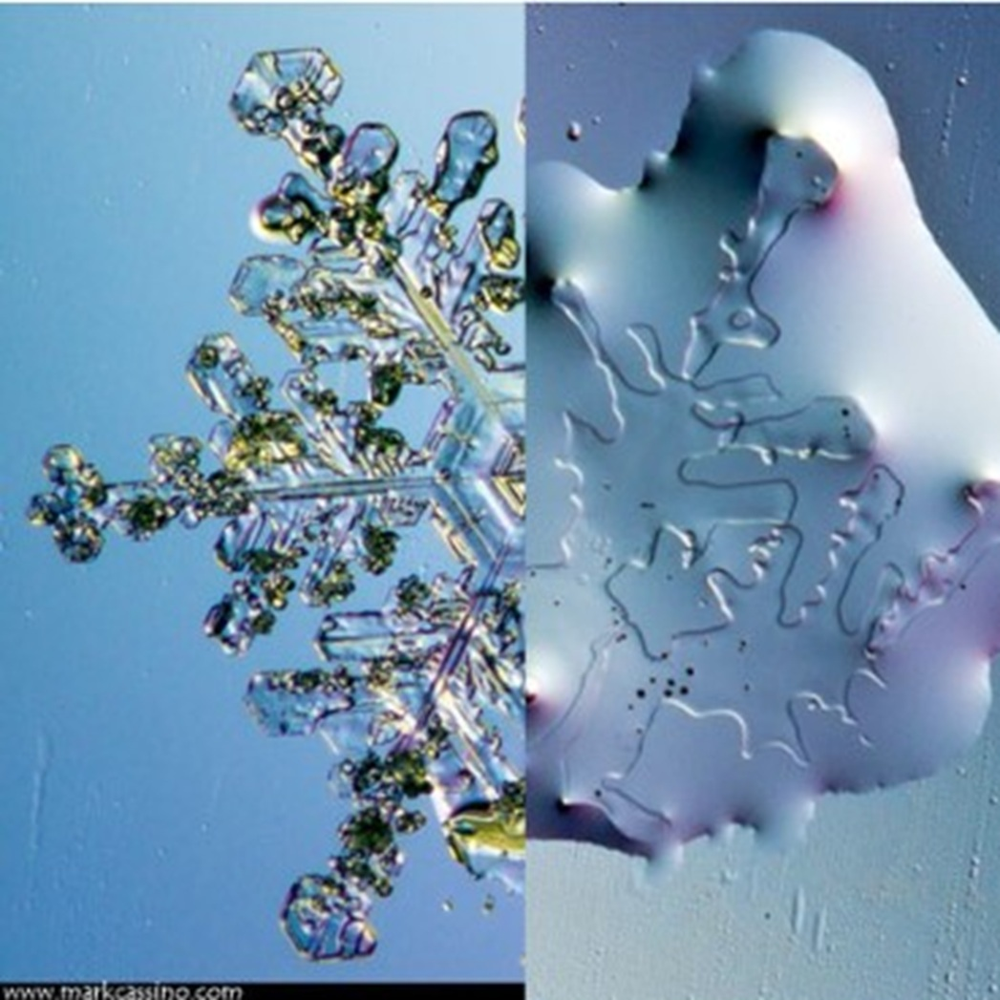
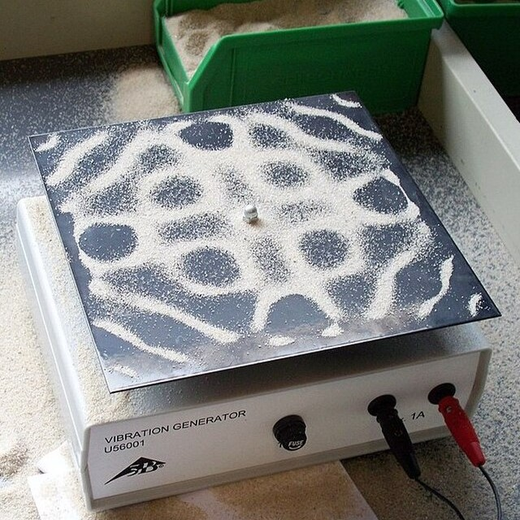
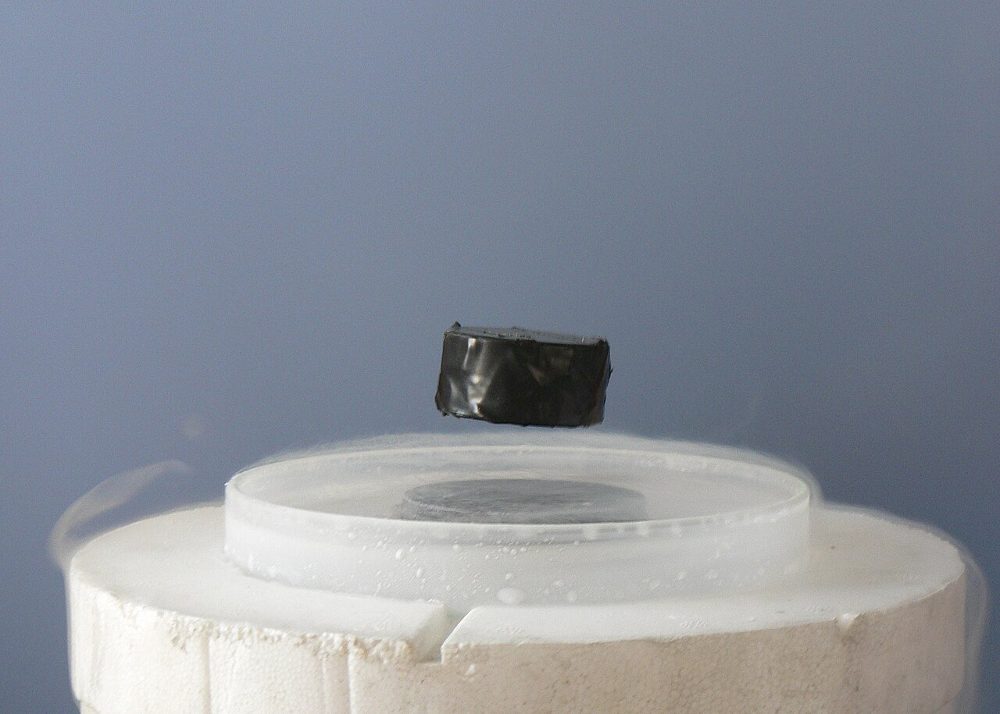

Physics
Physics is the branch of science that explores matter, energy, motion, force, and the laws that govern the universe. It studies how objects behave in space and time, from the smallest particles to massive galaxies. As one of the core scientific disciplines, physics helps us understand natural phenomena and forms the foundation of many modern technologies.
It explains everyday events such as gravity, light, sound, electricity, and magnetism, while also uncovering deeper mysteries of the cosmos. Physics plays a major role in advancements in engineering, medicine, communication, and space exploration, making it an essential field of study in both science and technology.
Fields of Physics
-
 Classical Mechanics
Classical Mechanics
-

Thermodynamics and Statistical Mechanics -
 Electromagnetism and Photonics
Electromagnetism and Photonics
-

Acoustics -
 Optics
Optics
-
 Theory of Relativity
Theory of Relativity
-
.jpg) Astrophysics and Cosmology
Astrophysics and Cosmology
-
 Quantum Mechanics, Atomic Physics, and Molecular Physics
Quantum Mechanics, Atomic Physics, and Molecular Physics
-

Condensed Matter Physics -
 High-energy Particle Physics and Nuclear Physics
High-energy Particle Physics and Nuclear Physics